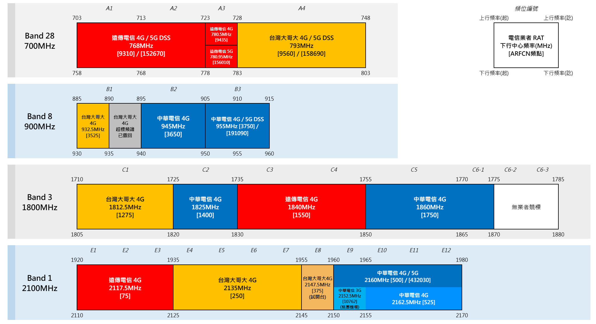
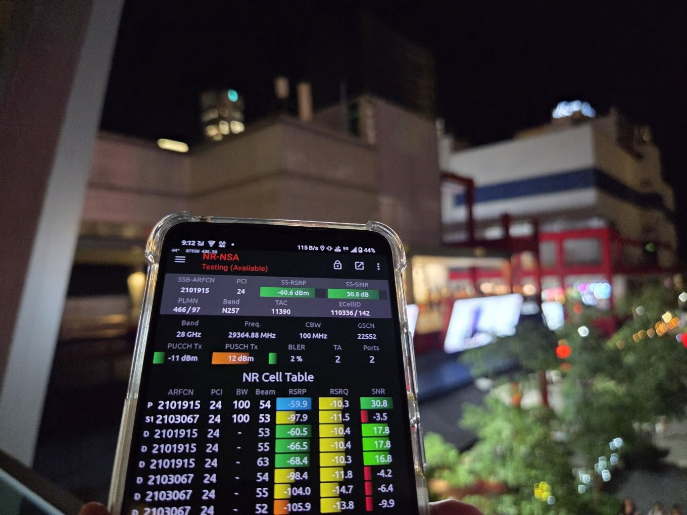
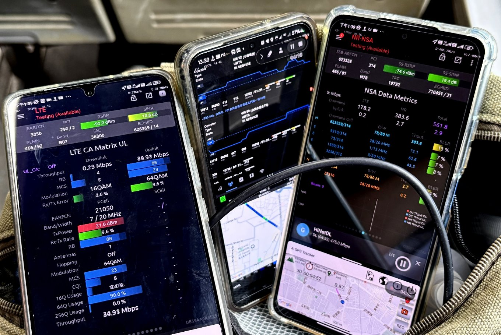
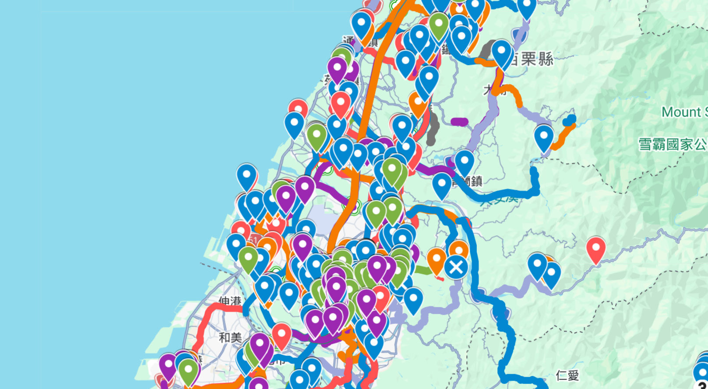

正確、即時的頻譜資訊
想查詢各業者的4G、5G頻段分布與運用情形？網路上的確有很多資料，但往往已經過期而不正確，尤其歷經台台併、遠亞併之後，頻譜早已整個大改配！但在愛蓁這裡您將可以看到最正確、最即時、最完整的電信頻譜資訊。
Network Status
Local Weather
天氣資訊載入中
歡迎來到愛蓁電信工作室 - 頻譜資訊網~
News Board
| 消息來源 | 日期 | 分類 | 電信業者 | 影響範圍 | 站台 | 內容 |
|---|
Coverage Map
網路訊號涵蓋圖是業者依照基地台位置和頻率特性進行模擬繪製，一般是指訊號在無遮擋的室外環境涵蓋情形，僅供參考。若想瞭解生活圈及室內場域的實際4G/5G上網體驗情形，建議向電信業者免費申辦7日免費試用卡。
超過0+處定點/移動測速、投入超過0+個小時。

想查詢各業者的4G、5G頻段分布與運用情形？網路上的確有很多資料，但往往已經過期而不正確，尤其歷經台台併、遠亞併之後，頻譜早已整個大改配！但在愛蓁這裡您將可以看到最正確、最即時、最完整的電信頻譜資訊。

這裡的網速測試並非只是一個SpeedTest的結果呈現，而是完整揭露當下的測試環境，透過Google Maps位置和即時的相機鏡頭呈現，搭配專業的Network Signal Guru軟體展示基地台資訊、各頻段收訊強度及相關訊號指標，再到整個測試的全過程畫面記錄。

累積超過3,500個定點和移動測速案例，蒐集全台各家電信的基地台資訊，瞭解頻段開台情形、站台配置及收訊和網速情形，從2G、3G、4G、5G再到未來，一同見證電信技術的發展和演變。

透過測速資料庫的各項篩選功能，以及測速地圖瀏覽，可隨時快速方便地找到欲查看的測速案例，而不用在海量的影片中盲目找尋。未來，我們將透過AI影像識別技術，解析出站台資料和測速數據，進一步強大測速資料庫。